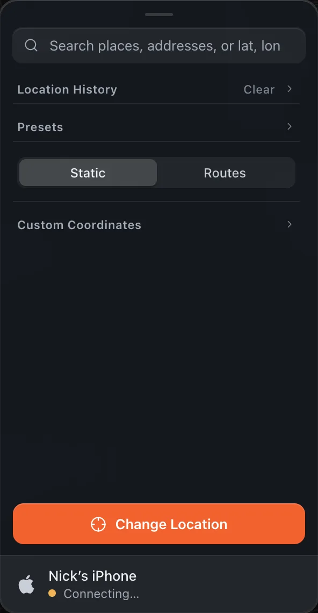
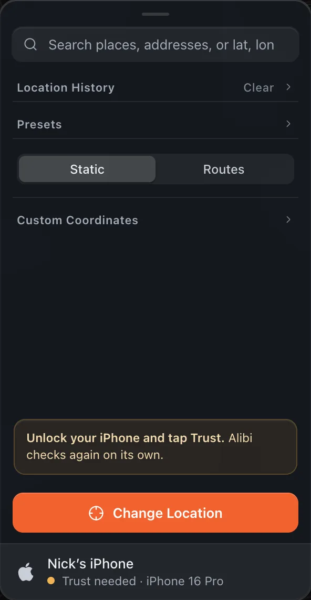
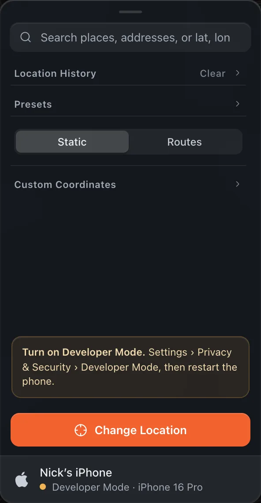
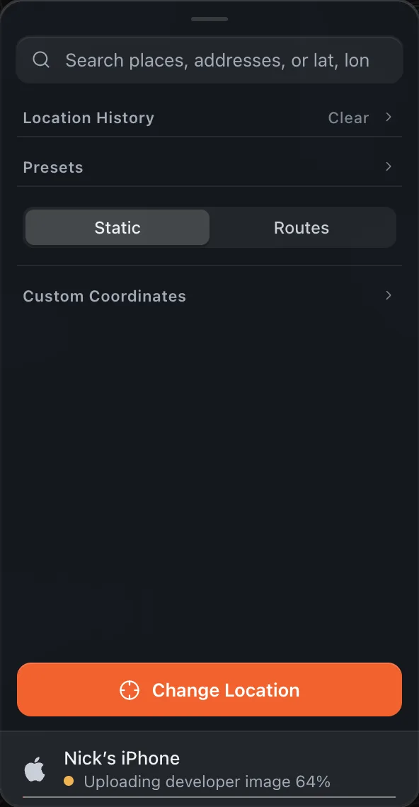
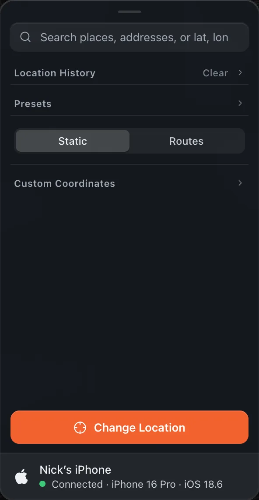
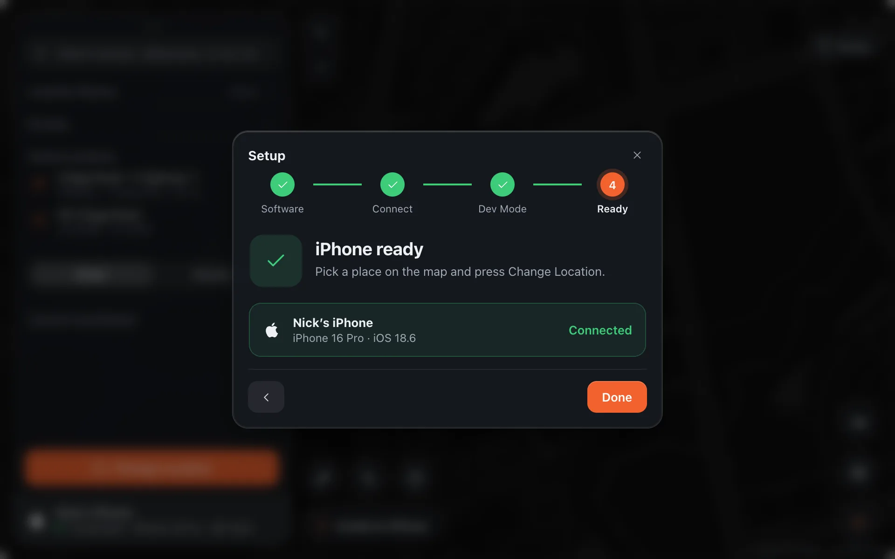

Installation & Setup
Setup iPhone for Alibi
To set up your iPhone to change its location from macOS, follow these steps. Alibi shows each one at the bottom of its panel as it happens.
Plug your iPhone into your Mac with a charging cable and unlock it.
If you have not plugged this iPhone into this Mac before, macOS may ask for access to your photos and videos. Click Don’t Allow: that is asked by the Mac, not by Alibi, and Alibi does not need it.
Open Alibi to the main screen with the map. The device row at the bottom of the panel changes from No iPhone to Connecting.

When the iPhone shows Trust This Computer, tap Trust and enter your passcode. Alibi waits and checks again on its own.

Don’t see the Trust prompt?Unplug the iPhone and plug it back in with the screen unlocked. If it still does not appear, try another cable or USB port. If you tapped Don’t Trust earlier, reset it on the iPhone under Settings › General › Transfer or Reset iPhone › Reset › Reset Location & Privacy, then plug in again.Turn on Developer Mode. On the iPhone open Settings › Privacy & Security, scroll to the bottom, open Developer Mode and switch it on. Tap Restart when iOS asks. When the phone is back, enter your passcode and confirm Turn On.

After the phone boots, check Settings › Privacy & Security › Developer Mode once more and make sure the switch is on. Alibi notices by itself and moves on.
Wait for the developer image. The first time, Alibi fetches Apple’s developer image (about 20 MB) and mounts it on the phone. A thin progress bar runs under the device row.

The device row turns green and reads Connected, and the pill on the map says Ready. Your iPhone is set up to change location.

